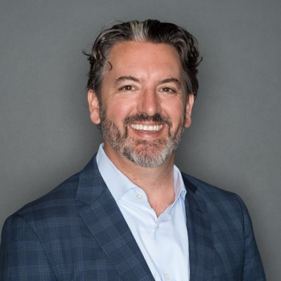

Despite massive investments in technology and training, the fundamental human capabilities that drive collaboration, performance, and innovation continue to decline. Heliotrope Imaginal addresses the root causes — not the symptoms.
Only 12% actually are.
costing $8.8 trillion in lost productivity.
The vast majority are not at their potential.
The solution isn't more technology. It's more human capability — deliberately developed.
Watch our overview to understand how AllStarTeams and Imaginal Agility work together as one integrated platform for building human capability in the AI era.
Our network of certified facilitators are trained and equipped to deploy both AllStarTeams and Imaginal Agility programs — bringing human capability development to individuals, teams, and organizations worldwide.
Leadership Development & Facilitation · Toronto, Canada
With 15+ years of cross-sector experience spanning private industry, nonprofits, and academia, Lejla brings a unique blend of practical insight and academic rigor to organizational development. A certified LPI® Coach and Team Coaching Facilitator, she specializes in leadership development, organizational change management, and workshop facilitation across global contexts.
Global Development Consultant · Hove, England, UK
An independent global development specialist with 20+ years of experience spanning gender, international development, higher education, and ESG strategy. A published author with 44+ academic publications, Dr Masika has consulted for the United Nations, British Council, Oxfam, and Action Aid, and held senior research and lecturing roles at the University of Brighton, University of Sussex, and LSE.
linkedin.com/in/dr-rachel-masika-b32bb912
Foresight Advisor & Innovation Facilitator · Bologna, Italy
A consultant and facilitator working at the intersection of foresight, collaboration dynamics, and organizational complexity, Gianluca serves as Director of Innovation at AllStarTeams and Global Foresight Advisor at the Global Foresight Advisory Council (GFAC). Co-founder of alibi.design and Complexity Surfers, he designs participatory processes and anticipatory strategies that help organizations and teams intentionally navigate complexity and uncertainty.

Product Strategy & Human-AI Collaboration · San Mateo, California, USA
A product strategist and consultant working at the intersection of team dynamics, workplace performance, and technology, Brad serves as Product Strategy & Development lead at Heliotrope Imaginal. With 15+ years at TIBCO leading enterprise transformation across 5,000+ employees, and deep expertise in go-to-market strategy, organizational design, and human-AI collaboration, he specializes in translating complex human capability frameworks into scalable, adoptable solutions.
Senior Program Manager & PMI Facilitator · Winnipeg, Manitoba, Canada
A senior program manager with 15+ years leading complex, cross-functional programs across software, hardware, energy, and international development, Cassio brings deep expertise in Agile/Scrum, PMO governance, and organizational transformation. A certified PMP and Director of Governance at PMI Manitoba, he has led enterprise programs at Petrobras, Halliburton, Atos, and ERLPhase — and is currently pursuing a Master's in Digital Transformation and Innovation at the University of Ottawa.
Visual Collaboration & Facilitation Design · Wilsonville, Oregon, USA
A human-centered design leader and Director of Strategic Next Practices at MURAL, Mark brings 30+ years of experience at the intersection of imagination, collaboration, and design thinking. A certified Lead Instructor at the LUMA Institute and Co-Founder of Free Your Imagination, he has led learning experience and content design initiatives at MURAL, Autodesk, and Kinetix — helping teams and organizations develop the visual thinking and facilitation capabilities needed to thrive in complex, distributed environments.
Whether you're an individual professional, team leader, or enterprise — Heliotrope Imaginal has a pathway for you.